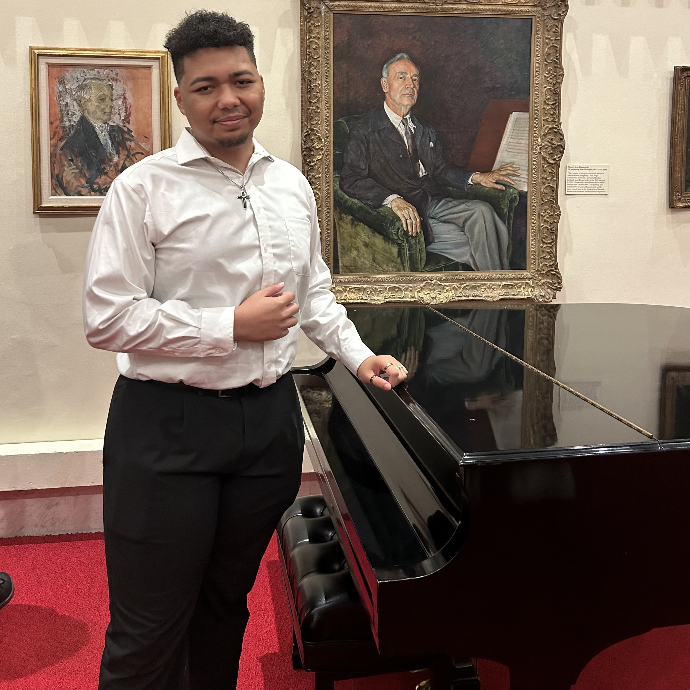

Summary
Creating this website was something I always knew I wanted to do—it was the perfect opportunity to showcase my skills and creativity.
I began by researching the best options for hosting a webpage and ultimately chose Namecheap because of their great deals for new customers.
For development, I used Visual Studio Code along with HTML, CSS, and JavaScript, ensuring my project was modular to keep the code neat, organized, and easy to read.
My experience in JavaScript, which began in high school computer science classes where I also learned Python, gave me confidence to dive into this project.
Before coding, I sketched multiple design ideas on paper and settled on the final layout.
I focused on planning without limitations, designing features I wanted first and then figuring out how to implement them later.
To enhance my skills, I watched several YouTube tutorials, primarily from SuperSimpleDev, which provided an excellent foundation for starting with CSS and HTML.
For animations, I explored resources like W3Schools and Animate.css to decide on the final effects.
I implemented a DVD-style wall bounce animation for visual interest, a gradient background for the project pages, and a color-cycling effect for the title,
which made the design dynamic and engaging.
The entire project took me less than a week, dedicating 1-2 hours each day to development.
Once completed, I shared the website with people experienced in web development to gather feedback and suggestions for improvement.
Their input helped me refine the final product, making it more engaging and visually appealing.
Looking ahead, I plan to revisit this project to add new features or improvements that enhance the user experience.
This process not only showcased my technical skills but also highlighted my ability to learn, adapt, and create something I'm proud of.
Images
